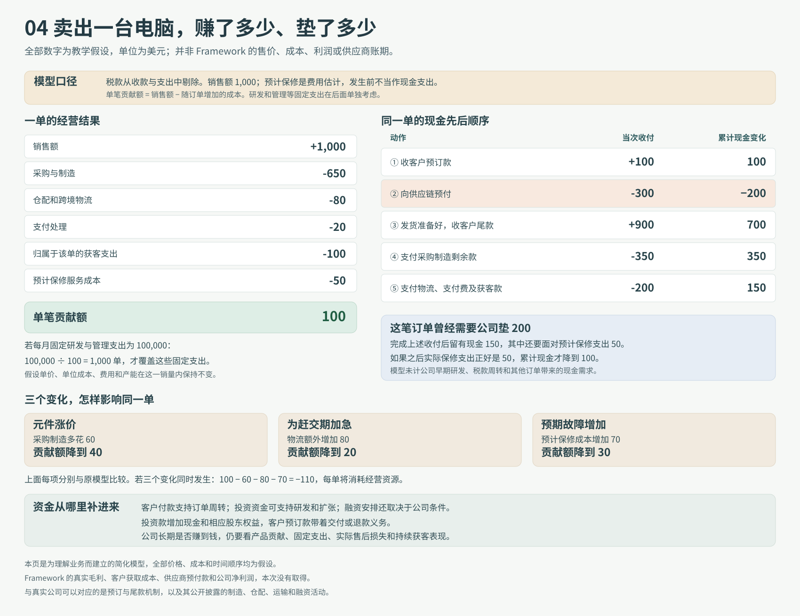

章节目录
第 05 章 · 盈利与现金
卖出一单赚多少、垫多少
把同一笔电脑订单分别放进经营结果和现金时间线，看看为什么卖得出去还需要周转资金。
思维导图

同一单的经营结果与现金时点
全部数字是教学假设，单位为美元。
具体情境
教学情境 · 美元 · 不计税 假设一台电脑销售额 1,000，采购制造 650，仓配和跨境物流 80，支付处理 20，获客支出 100，预计保修 50。以采购制造作为本例商品成本口径，商品层面的毛利是 350。再扣除其他可归属到订单的支出，得到 100 的单笔贡献额。它还需要覆盖团队和研发等固定开支。
商品层面毛利1,000 − 650 = 350
单笔贡献额350 − 80 − 20 − 100 − 50 = 100
最大资金缺口100 − 300 = −200
现金顺序假设为：先收预订款 100，向供应链预付 300，再收客户尾款 900，付剩余制造款 350，以及物流、支付与获客款 200。累计现金依次为 100、−200、700、350、150。保修支出发生前，预计的 50 用于估算经营结果；如果后续实际支出正好 50，累计现金降到 100。
如果单独遇到采购制造涨价 60、加急物流增加 80 或预计保修增加 70，单笔贡献分别变为 40、20、30。三个变化若同时发生，则为 −110。各项成本、支付时间和税务口径都是简化假设，不用于推断 Framework 的真实利润。
关键判断
- 利润口径写清楚
- 商品毛利、单笔贡献额和公司净利润各自涵盖不同费用。管理讨论时，先确认减掉哪些成本，再用同一口径比较。
- 按时点看钱，而不是只看最后余额
- 本例最后有现金余额，但尾款进来前曾缺 200。还要看批量订单、退订、备件库存和公司固定支出的资金需求。
讨论题
先讨论，再展开参考分析。
为了赶交期，每单多花 80 运输费，还剩多少？
在其他条件不变时，单笔贡献从 100 降到 20。是否采用加急还要比较客户取消、退款和后续费用的影响。
如果客户尾款收得更晚，贡献额和资金缺口会怎样？
仅改变收款时点时，题设的贡献额不变。资金缺口可能持续更久，若期间还有供应商付款，缺口也可能扩大。